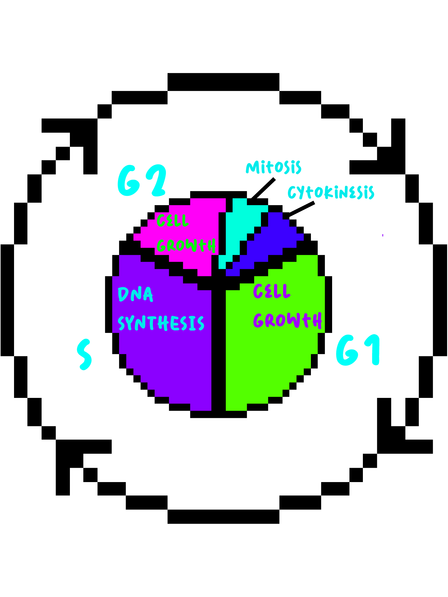

Interphase
Before Mitosis Begins...
Cells spend most of their time in INTERPHASE
Interphase consists of 3 stages called (in order)
_______, _______, _______
G1 Phase, S Phase, G2 Phase
Prophase, Anaphase, Metaphase
S Phase, Prophase, G2 Phase
G1 phase is where the cell begins to grow using nutrients that will allow succesful DNA replication later on
S phase is where the DNA
______________________________________
replicate and connect at the centromere
unravel splitting to opposite ends of the cell
and the centrosomes duplicate heading to opposite side of the cell
G2 phase is the last phase before the cell enters cell division.
